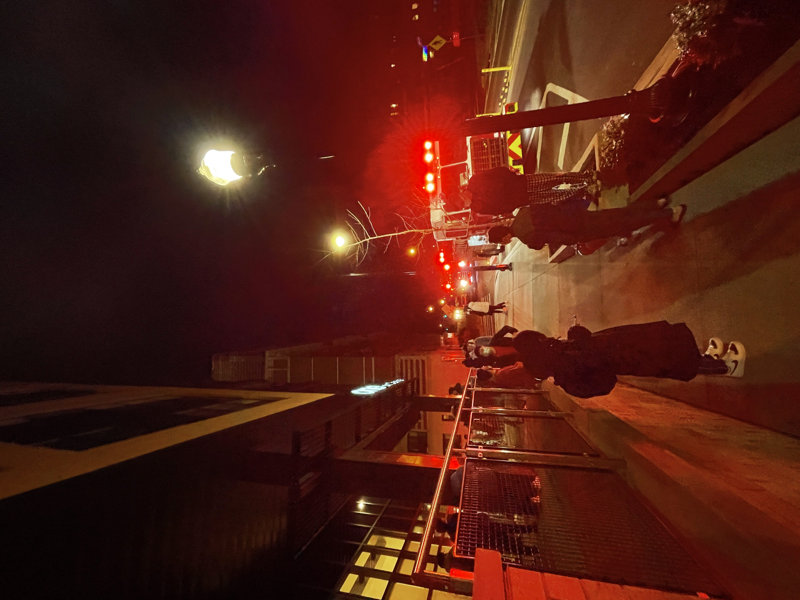

Ongoing Journey - Feburary 2022
Forgot that Feburary has only 28 days lol, flew by faster than usual it seemed like.
Life Updates
Fire Alarm
Thought what I would miss the most, while standing outside at 2am in the cold, found it diffult to came up an answer.
Woken by a sharp siren early in the morning, ‘An emerency has being reported, please stay calm and evacuate to the closest shelter area’. Walked downstairs, fire trucks came, after around half an hour we got informed it was a false alarm.
Less about the event, when heard the siren was originally sound asleep, felt, quite vunlerable and this fear of being dead slided in, remember heart rate went up, arm and leg stiffened, mind going blank and all stimulates rushing in, unable to process them one by one.
As it turnes out, someone left a towel at the sauna coal space, the towel caught on fire and the alarm went off for the whole building lol.
Let Myself be Human, It’s Okay to Feel Down
Tends to get swamped by work at around week 6 to 7 during a semester, with midterms pileing up, extracurricular ramping up in speed.
This semester specifically, felt less motivated then usual, had a hard time keeping a jounral, not to mention waking up at 6am every morning.
Though read this article
似乎自己从睁眼开始一天都精力充沛才是健康的。可能也是一种社会规训的结果，永远进步，永远螺旋向上。但其实这不是人类真实的状态啊。人是会累的，人是有情绪的，我们是可以低落的。允许自己有这样的情绪，并且不过度解读，或许是保持平衡的方法。
Via 吾栖之地 - 是可以低落的. Thought that, instead of not feeling down, perhaps it’s better to find activities to help get out of this state?
And on another article
… 情绪可以带着我们走，那我们能不能带着情绪走？
有人会健身 2 小时，有人会睡觉，有人会读书，有人会看综艺节目，有人会发呆。我会背 85 个单词。大家都有某种办法，来应对情绪不好的时刻。
Via 叁拾一周. Have started baking a bit more as spring break approaches, wish to explore more.
Grandpa, 天天乐, and Staying Happy
Grandpa changed his pen name to 天天乐, found out two weeks ago during our video chat.
As he turned 80 last year, grandpa’s vision of life solidified even more, as he attempts to teach me every single we call:
身体第一，学业第二，有空多去交交朋友。
There nothing more important than ‘stay healthy and be happy’ as he state, linking to his new pen name, which translate quite literally to ‘happy everyday’.
Although I laughed at the new name, do agree. For both me and grandpa, a well being enable us to explore so much more, and being happy brings a positive impact to people we surround ourselves with.
On how to achieve that state, here is another list that grandpa ask everytime we chat:
Have you had dinner yet
Has anyone being bullying you at school
Come back and pay a visit ;-;
Answers for these have being consistent ever since start of the pandemic, but this doesn’t stop grandpa from asking. He would nod his head in approval when hearing the first answer, give a good smile hearing the second, and twist his face in disappointment coming to third.
Saw an article on the benefits of living past 30, as the seemingly infinite path ahead slowly converges
年过三十的好处是，再也不用对未来权衡利弊了。终于开始可以不计得失地面对想走的那条路。哪怕道路幽深，野草荒芜，看不清前路。
Via 喜于微 - 30+的好处. Wish I can live like grandpa one day.
Empathy, Sympathy and Compassion, Seek First to Understand
Empathy: 理智上理解他人的情感或情绪状态。
Sympathy: 理智上理解他人的情感状态，并且可以分享他人的情感状态。比如，别人伤心，你也跟着一起伤心。
Compassion: 理智上理解他人的情感状态，可以分享他人的情感状态，并有向帮助他人的欲望。比如，一位朋友听到我失恋的故事时，越想越气，特别想替我打电话骂前任一顿。
Via 林中来信 - 理解与同情. Felt that, when people reach for help, they aren’t always looking to resolve the issue from talking to me.
Rather of understanding emotions, I tend to take actions. When one say their throat hurts I went to CVS and got them cough drops the next day, and when one say they feel stressed as they have no time for lunch I get them meal replacement.
Relized this pragmatic approach I learned directly from my parents, I’ve never thought there would be a, different approach.
Back in 2020 there was a time I did bad on one exam, drag myself downstairs and told my mom about it. Washing dishes at the time, recall mom slammed the pot that at the sink, water splashing out, asked not to talk on these kinds of things anymore, she seemed, quite frustrated and vulenerable.
Mother saw my ask for empathy as compassion, there was little she can help with regarding an exam on web development. On the same end, me, took this directly as the way I can help others.
His experience may have impacted his views, When people talk to you, they are not talking about their views, but their pains.
Via 事不过三 - 阅读碎片.